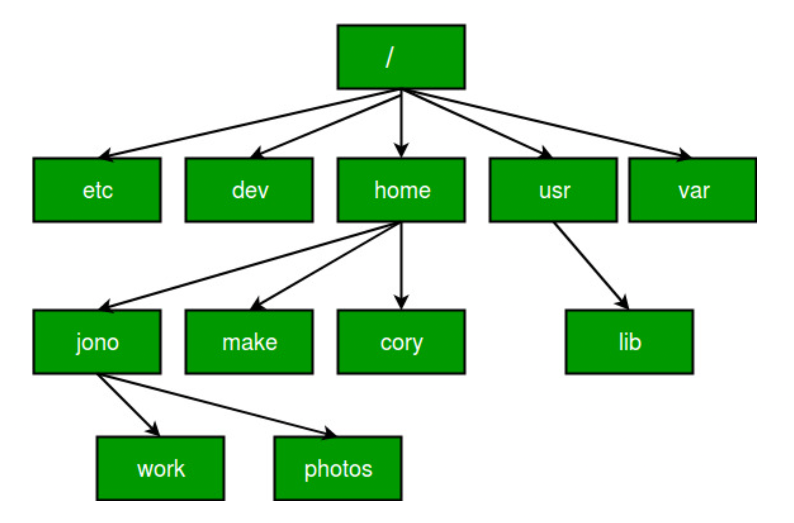
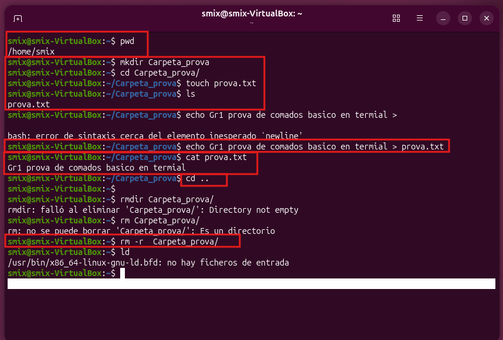
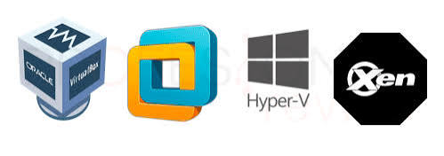

AB
Nombre Apellido
Rol dentro del equipo
Breve descripción de sus tareas en el proyecto.
Una frase que explique de qué trata el trabajo: qué se ha investigado o construido y qué se irá viendo sesión a sesión.
Rol dentro del equipo
Breve descripción de sus tareas en el proyecto.
Rol dentro del equipo
Breve descripción de sus tareas en el proyecto.
Rol dentro del equipo
Breve descripción de sus tareas en el proyecto.

/home/user/doc./docpwd mkdir ls cd touch echo rm

És el sistema de control de versions distribuït més utilitzat en el món. Va ser creat al 2005 per Linus Torvalds. A partir d'aquest, s'han creat diverses plataformes com Github, que adapten les funcionalitats a una interfície web, allotjant repositoris al núvol, fent-los accessibles desde qualsevol lloc.
Alguns dels termes més importants en el flux de treball de control de versions de Git.
Así se declara una variable de cada tipo básico en Kotlin.
var edad: Int = 20
val precio: Float = 4.5f
val nombre: String = "Ana"
var activo: Boolean = trueCon if / else decidimos qué bloque de código se ejecuta según una condición.
val edad = 20
if (edad >= 18) {
println("Eres mayor de edad")
} else {
println("Eres menor de edad")
}fun main() {
print("Ingresa el primer numero: ")
val num1: Float = readln().toFloat()
print("Ingresa el segundo numero: ")
val num2: Float = readln().toFloat()
print("Ingresa un numero para elegir la operacion:\n1. Suma \n2. Resta\n3. Division\n4. Multiplicar\n\nIngresa el numero: ")
val num3: Int = readln().toInt()
if (num3 == 1) {
print("El resultado es: " + (num1 + num2))
}
if (num3 == 2) {
print("El resultado es: " + (num1 - num2))
}
if (num3 == 3) {
print("El resultado es: " + (num1 / num2))
}
if (num3 == 4) {
print("El resultado es: " + (num1 * num2))
}
}Se centra en la lògica, estructura i funcionalitat.
Defineix a qui va dirigida la pàgina web i com s’organitza la informació.
És la part que no veiem però sí sentim.
És la part visual de l’estructura definida per la User Experience.
Defineix la identitat: colors, tipografia i altres elements visuals.
El disseny comença amb un sketch simple. Després es crea un wireframe com a base, hi apliquem el mockup i finalitzem amb un prototip funcional.
És el pla global que defineix on va cada component i com es comunica amb els altres.
L’escalabilitat i la seguretat depenen de l’arquitectura.
És el patró d’arquitectura que fa servir la World Wide Web.
Valoración general del proyecto: qué se ha aprendido, qué se haría diferente y cómo han encajado las sesiones entre sí.